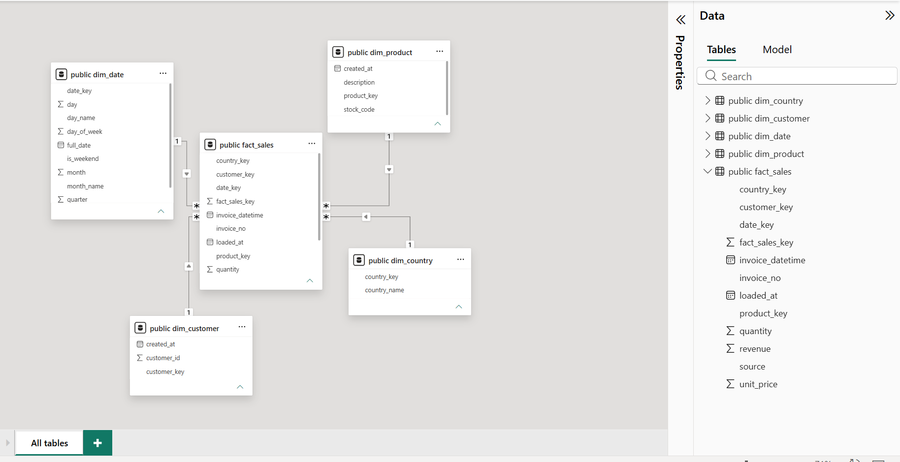
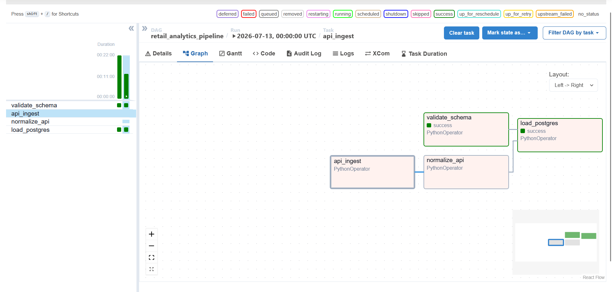

Historical CSV bulk load plus a daily incremental API feed, merged through PySpark schema validation into a Postgres star schema — orchestrated end-to-end by Airflow, reported in Power BI. Built by Arnav Modi.
Five sequential stages, each with a single job. Order matters — validation has to happen before anything touches the warehouse.
CSV historical bulk load (Online Retail II, UCI) plus a daily API pull from DummyJSON, landed separately and untouched.
PySpark buckets every row into valid / returns / quarantine. Nothing is silently dropped — quarantined rows are staged, not discarded.
The API source is remapped into the same schema shape as the CSV source, with fabricated fields explicitly documented.
Airflow runs both branches in parallel, merges them, and loads a Postgres star schema — daily, with retries and failure alerting.
Power BI connects directly to the warehouse for revenue, product, geography and source-split reporting.
Real counts from the last full run — both sources merged into fact_sales.
Four dimensions, one fact table, grain of one row per invoice line item. source tracks which pipeline branch each row came from.

Four tasks, two parallel branches, daily schedule, three retries, email alert on failure. Running in Docker on a custom Airflow image with a JDK installed for PySpark.

Power BI connected directly to the Postgres warehouse — revenue trend, source split, geography, and top products. Live and interactive below, not a screenshot.
What's real, what's simplified, and why — documented rather than hidden.
Truncate-and-load on every run, not incremental upsert. Correct for a demo pipeline at this scale; a production version would need merge/upsert logic and slowly-changing dimensions.
Country and Invoice don't exist in the DummyJSON source — defaulted to "Unknown" and a synthesized API-{cart_id} respectively. Documented in code, not papered over.
A local/S3 storage backend interface exists and is used for path resolution, but the Spark-level read/write methods are scaffolded, not yet exercised end-to-end. AWS integration is deliberately deferred to a later phase.
API-source customer IDs aren't namespace-protected against the CSV source the way StockCode and Invoice are. No collision today given the current ID ranges — a known, low-risk simplification.